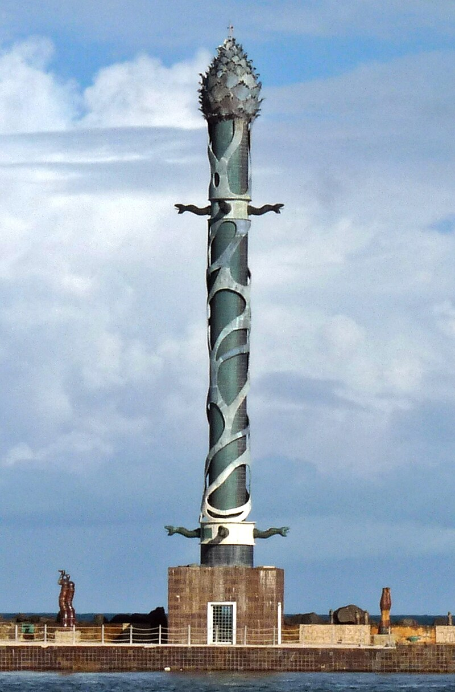
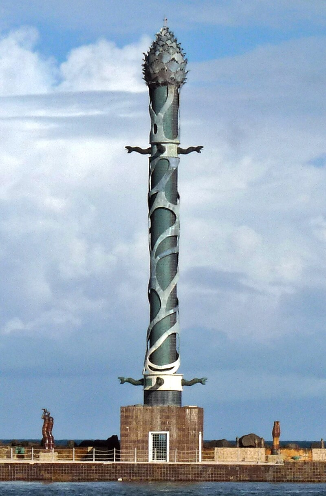
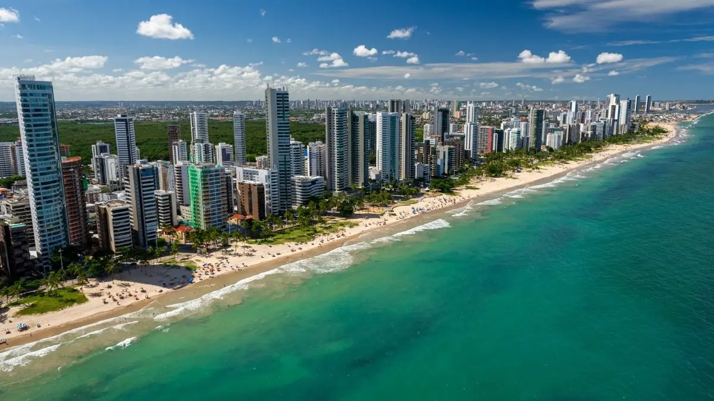
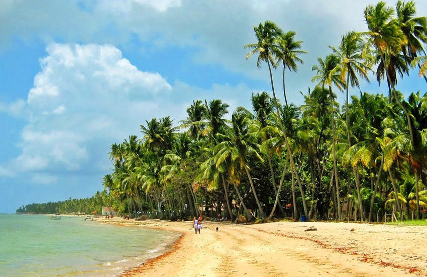
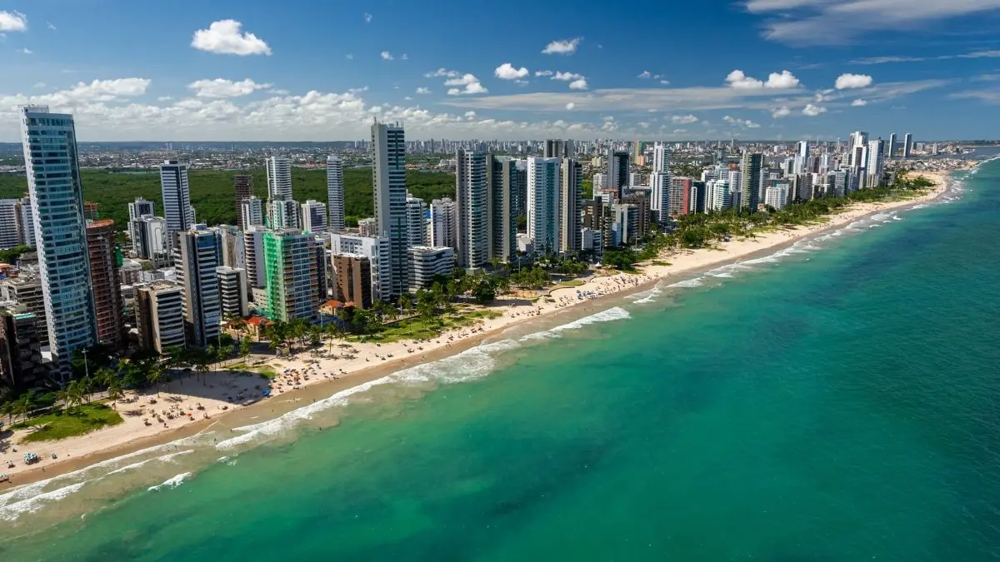
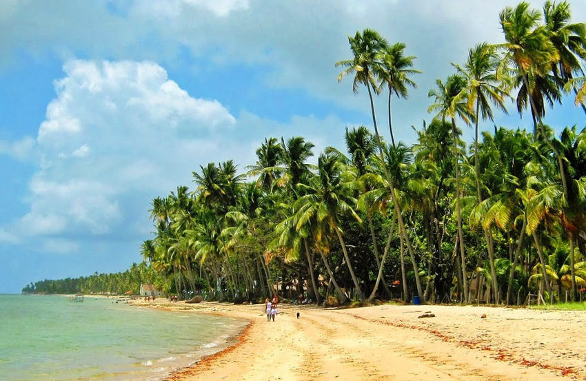

Região Nordeste - Pernambuco
- Recife
- Recife Antigo
Recife
 


Recife é um município brasileiro, capital do estado de Pernambuco, localizado na Região Nordeste do país. Com área territorial de aproximadamente 218 km², é formado por uma planície aluvial, tendo as ilhas, penínsulas e manguezais como suas principais características geográficas. Cidade nordestina com o melhor Índice de Desenvolvimento Humano (IDH-M), o Recife é a quarta capital brasileira na hierarquia da gestão federal, após Brasília, Rio de Janeiro e São Paulo, e possui o quarto aglomerado urbano mais populoso do Brasil, com 4 milhões de habitantes em 2017, superado apenas pelas concentrações urbanas de São Paulo, Rio de Janeiro e Belo Horizonte. A capital pernambucana tem, num raio de 300 km, três capitais estaduais sob sua influência direta: João Pessoa (122 km), Maceió (257 km) e Natal (286 km).
Praias
Você sabe quais são as principais praias de Recife?
 



Um dos principais destinos turísticos do Brasil na atualidade é Pernambuco, com suas piscinas naturais e arrecifes. As praias de Recife, como Porto de Galinhas e Boa Viagem, encantam tanto brasileiros quanto estrangeiros. Porém, há muito mais para explorar por aquelas bandas.